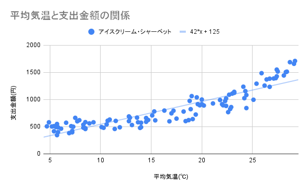

課題について
課題の選択
下の課題A〜課題Cのいずれか１つ以上を選択し、レポートを作成する。
複数の課題を選択する場合は、それぞれにレポートを作成すること。
ただし、このサイトの各ページに掲載されているデータを題材にしてはいけない。
レポートの構成
次の見出しでレポートを作成する。
- (1) 背景
- (2) データの分析
- スプレッドシートで求めた統計量，相関係数，回帰式などを記載する。
- スプレッドシートで作成したグラフを必ず掲載する。
- 課題A: データAとデータB，データAとデータX，データBとデータXの散布図
- 課題B: データAとデータBの散布図，問題解決を検証するグラフなど
- 課題C: 調べた統計量を表すヒストグラムや散布図など
- (3) 考察
- (4) 出典
- データの出典を明記する。
- 課題Cでは、自分で調査したことを示す写真などを必ず掲載する。
レポートの作成
- 下記のGoogle Documentをテンプレートとして用いる。
- スプレッドシートは下記のテンプレートをコピーして使用する。
-
スプレッドシートのテンプレート
-
リンクを開いたら、メニューバー ＞ ファイル ＞ コピーの作成 で自分のGoogle Driveに
コピーしてから編集する。
課題の提出
提出は、下記のGoogle Formにレポートの他に分析に使用したスプレッドシートを添付する。
２つ以上の課題を選択した場合は、課題１つにつき１つのレポートを作成し、それぞれフォームで提出する。
期限は3月3日(日) 22:00とする。
データの分析課題提出フォーム
評価
完成度の高いレポートやユニークな調査は加点する。
提出の遅延は減点の対象とする。
学校の課題としてふさわしくない内容，他者のレポートやWEBサイトからの盗用や剽窃等の不正行為は厳格に対処する。
２つ以上の課題を選択した場合は、この課題の配点を超えて、平常点の範囲内で加点する。
課題A: 疑似相間の原因の解明
概要
疑似相間にあるデータを探し、その原因となることをデータを示して検証する。
データの収集
直接的な因果関係はないが、相間関係がありそうなデータ（データAとデータBとする）について、交絡因子（共通の原因となる要素；データXとする）を考え、仮説を立てる。
データA・データB、およびデータXをインターネットを通してデータを収集する。
※データの出典について必ず記録する。
※予め用意されたデータセットを用いても構わない。
データの分析
スプレッドシートで、データAとデータB，データAとデータX，データBとデータXについて、相関係数を求め、相間があることを確認する。
散布図を作成し、回帰直線およびその方程式を求める。
レポートには、散布図行列を掲載する。
因果関係の考察
データXがデータAとデータBの原因となっていることを示し、因果関係について考察する。
課題B: データ分析による問題解決の提案
概要
たとえば、平均気温とアイスクリーム・シャーベットへの支出金額は下図のような関係がある。各プロットと回帰直線を比較すると、10℃以下と25℃以上の範囲では支出金額が回帰直線よりも大きい値となり、10〜25℃の範囲では支出金額が回帰直線よりも小さい値となっている。10〜25℃のときのアイスクリームの売り上げを伸ばすことができれば、収益を上げることができるだろう。この課題は、データの傾向から問題点を分析し、それを解決する方法を考察することである。

データの収集
調べる対象のデータ（データAとする）について、問題点を挙げ、それを解決するような相間関係や因果関係をもつデータ（データBとする）を収集する。
上記の例では、アイスクリーム・シャーベットの収益を上げるというテーマなので、縦軸がアイスクリーム・シャーベットの支出金額（データA）とし、横軸は相関関係や因果関係のある気温（データB）を示した。
各自のテーマに合った問題点が解決できそうな横軸となるデータを仮説を立てて選ぶ必要がある。
たとえば、地域の過疎化・高齢化（都道府県ごとの年齢区分のデータ），地域医療（都道府県ごとの病院数や勤務医の人数），子育て政策（待機児童の数）などの社会問題、好きなスポーツチームがどうやったら勝てるかなどのテーマが挙げられる。
※データの出典について必ず記録する。
※予め用意されたデータセットを用いても構わない。
データの分析
スプレッドシートで、データAとデータBについて、相関係数を求め、相間があることを示す。また、散布図を作成し、回帰直線およびその方程式を求める。
レポートには散布図・相関係数・回帰直線の方程式を記載する。場合によっては、散布図行列を作成する。
因果関係の考察と解決方法の提案
回帰直線やプロットの大小関係等から、どのような原因でそのような傾向になるのかを考察し、解決方法を提案する。
課題C: 身近なものを測定して統計データを作成する
概要
身近なものについて実際に測定して統計データを自分で作成する。
たとえば、ハンバーガーショップのフライドポテトの長さ（サイズごとの違いや店舗ごとの違いなどまで調べると面白い），１本のシャーペンの芯で書ける文字数（硬さによる違いなどがわかると面白い），駅の改札を通る人の数と時間帯の関係、納豆１パックあたりの価格・重さ・粒の数の関係など、必ず自分自身で測定してデータを集め、統計量を求める。
データの種類は１種類でも構わないが、相間関係にあるようなデータも収集して分析すると、さらに面白い。
ただし、統計量を示すために、データ数は50個以上となるように測定すること（ただし、題材によってはこの限りではないが、きちんと統計量を議論できるくらいのデータの個数となるように自分で考えること）。
データの収集
調べたい対象を考え、実際に測定などをする。
※実際に測定したことがわかる写真を必ず撮影し、レポートに添付する。
※必ず自分自身で測定すること。アンケートによる収集や既存の調査結果を参照することは不可とする。
データの分析
スプレッドシートにデータを記録する。
データ数，平均値，最大値，最小値，中央値，四分位数，分散，標準偏差を求める。
レポートには、度数分布表とヒストグラムを掲載する。
また、２種類以上のデータを収集した場合には、散布図・相関係数・回帰式を掲載する。場合によっては、散布図行列を掲載する。
考察
このデータからどのようなことが考えられるのか考察する。